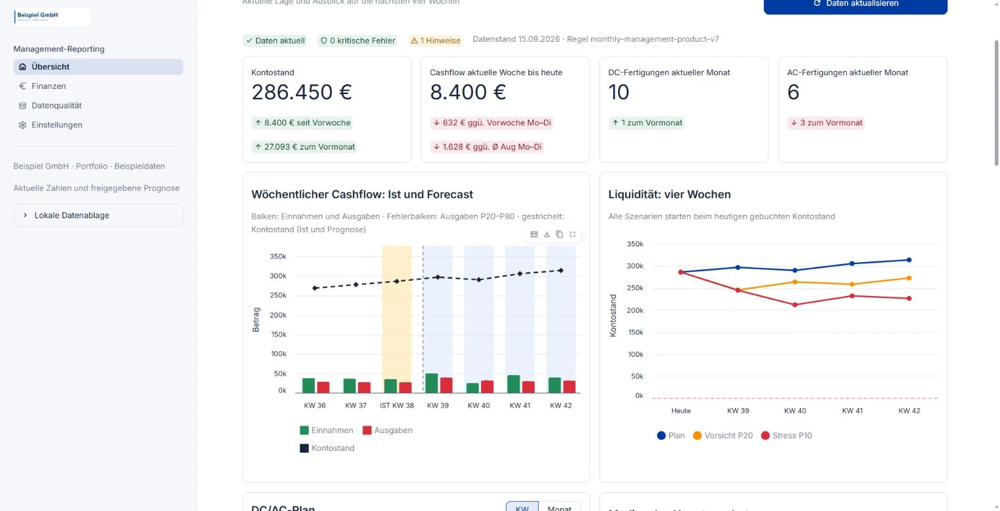

Daten & Analysen
Management-Reporting mit Liquiditätsvorschau
Die interne BI-Anwendung verbindet Montagefortschritt, Aufträge, Rechnungen und Bankbewegungen mit einer Liquiditätsvorschau für vier Folgewochen.
Zahlungsprioritäten fundiert setzen: Leistung, offene Forderungen und erwarteter Geldzufluss werden gemeinsam beurteilbar.

- GebautRekonstruierte PV-Leistung · kWp
- Modulmenge je Bauphase, zeitlich am Ende der Dachmontage eingeordnet. Eine Ersatzrechnung erzeugt keine zweite Montage.
- Beauftragt / geplant / fertigProjekt- und Auftragsstand
- Auftragsbestätigungen, Termine und Abschlussregeln. Dachmontage und Elektroabschluss werden getrennt bewertet.
- Abgerechnet / offenRechnungen und offene Beträge
- Gültige Rechnungsbeträge; abzüglich erfasster Zahlungen ergibt sich die Restforderung. Das Rechnungsdatum bleibt vom Bauzeitpunkt getrennt.
- BezahltBankeingänge und Ausgaben
- Tatsächlich gebuchte Geldbewegungen im betrachteten Zeitraum und verfügbare Kontostände.
- ErwartetVier Folgewochen · Annahmen
- Montagetermine und offene Rechnungen begründen erwartete Eingänge; historische Ausgaben tragen Plan-, Vorsichts- und Stresssicht.
Managementkennzahlen und Vorausschau in einer Anwendung
Weitere Ansichten erschließen offene Forderungen nach Fälligkeit, Finanzhistorie mit Jahres- und Wochenfiltern, Aufträge, Angebotsmediane, beratungsbezogene Verkaufsraten und gebaute PV-Leistung. Die Datenqualitätsseite zeigt Prüffälle, Quellenstände und die verwendeten Regeln.
Die Leistungsdefinition
Ein gebauter Umfang zählt einmal
Die PV-Auswertung löst Leistung von Verwaltungsereignissen. Mengen aus gültigen Abschlussrechnungen, ersatzweise ausgewählten Angeboten, werden einer Bauphase zugeordnet. Die kWp-Sicht führt eine terminierte Phase nach Ablauf des zugeordneten Dachmontagetermins als verbaut – vorausgesetzt, der Terminstand ist gepflegt. Alte Mengen- und Datumsannahmen bleiben ausgewiesen.
Vorausschau
Zahlungserwartungen aus dem Projektverlauf ableiten
Die Planung verwendet noch nicht überfällige Restforderungen sowie erwartete Abschläge aus angenommenen Angeboten und Montagen. Die hinterlegte Regel setzt 60 % nach Dachmontage an, berücksichtigt bereits gestellte Rechnungen und rechnet mit sieben Tagen Zahlungsziel. Fehlt der Elektrotermin, wird er 14 Tage nach Dachmontage angesetzt. Überfällige Forderungen bleiben in der Finanzsicht sichtbar, fließen aber nicht als sichere künftige Eingänge ein.
Vorsicht und Stress verschieben projektbezogene Einnahmen um eine beziehungsweise zwei Wochen. Die Ausgabenseite nutzt einen Vergleich historischer Durchschnitts- und Regressionsmodelle sowie deren Fehlerstreuung. Die Szenarien unterstützen Zahlungs- und Anschaffungsentscheidungen; sie bleiben von den gewählten Annahmen abhängig.
Prüfbare Grenzen
Datenqualität gehört zur Managementsicht
Ein vergangener Termin ist kein unabhängiger Baunachweis. Dachmontage kann unter definierten Bedingungen auch ohne Rechnung als Abschluss zählen; diese Annahme bleibt sichtbar. Für den Elektroabschluss gilt weiterhin ein Rechnungsnachweis. Ungeklärte Abschlüsse erscheinen mit Prüfgrund.
Jeder Rechner übernimmt einmalig einen vorbereiteten Anfangsbestand und führt anschließend eigene lokale Berichtsläufe. Ein vollständiger Lauf aktualisiert Bank und ERP; ein reiner Banklauf setzt einen ERP-Stand vom selben Tag voraus. Quellen, Ausgabeprüfsummen und Regelversion gehören zum gespeicherten Bericht. Erst nach erfolgreicher Prüfung wird der neue Stand aktiv; bei Fehlern bleibt der vorherige vollständige Lauf erhalten.
Auf den Unternehmensbedarf zugeschnitten
Zum Projekt gehören die Definition der Kennzahlen, die Umsetzung der Anwendung und die Leitung der Auswertungsbesprechungen mit der Geschäftsführung. Die Lösung bildet die konkreten Datenquellen, Kennzahlen und Bedienwege des Betriebs ohne zusätzliche BI-Plattform ab. Ihr Funktionsumfang folgt den benötigten Entscheidungen: Geschäftsentwicklung beurteilen, Zahlungsprioritäten setzen und erwartete Liquidität vergleichen.
Was die Prüfungen und Prognosen aussagen
„Freigegeben“ bezeichnet bestandene Daten- und Berechnungsprüfungen. Die Quellsysteme werden zu unterschiedlichen Zeitpunkten gelesen; spätere Änderungen erscheinen im nächsten Lauf. Auch ein bestandener Prüflauf bestätigt keinen tatsächlichen Zahlungseingang oder Montageabschluss.
Der historische Ausgabenvergleich nutzt zum Teil später realisierte Einnahmen als Eingangsgrößen. Er prüft damit die Ausgabenmodelle unter bekannten Einnahmen, keine vollständige Prognose unter ausschließlich zum jeweiligen Zeitpunkt verfügbaren Informationen. Die Szenarien sind Planungsmodelle, keine nachgewiesene Vorhersagegenauigkeit.